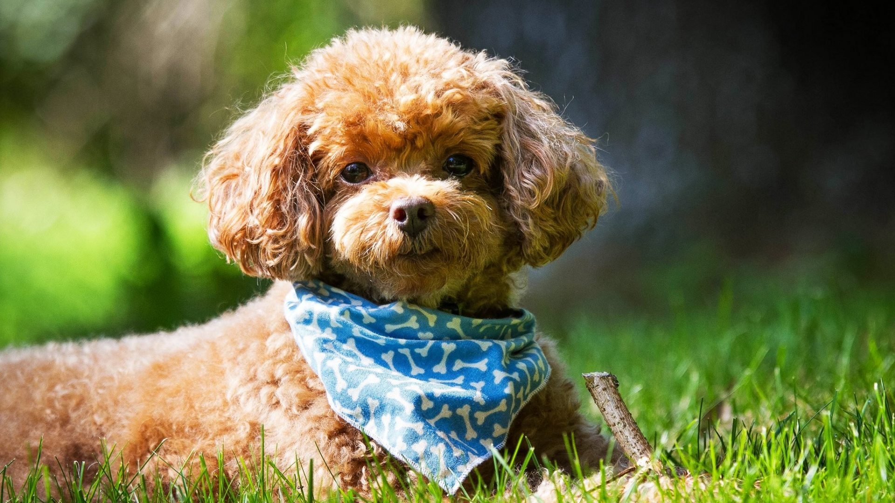

Dakota Creek Dog Rescue
Dakota Creek Dog Rescue

About Dogs...
Why Train Your Dog?
Sometimes we humans get stuck in ruts and do things over and over, and forgetting the reason why we are doing those things. I think training our dogs can be one of those situations. Training your dog has many benefits, which would take a long time to list. The main reason and best benefit of training your dog is communication.
Teaching your dog some basic behaviors with positive methods makes the training a lot more fun for the dog and much more effective. Once your dog starts to get the idea, behaviors start to be offered by the dog in order to get attention, toys, food or other valued items. This is your dog trying to communicate its needs, wants and desires to you.
Communication is the cornerstone of relationships. When we can communicate effectively with our canine friends, the relationship grows and gets better...and better...and better. It becomes a wonderful cycle and only gets better from there. Well-trained dogs get to share more of their life with their human, and vice versa.
What To Teach Your New Dog?
- Love a crate and their new home.
Crate training should be a positive experience, with small amounts of time in the crate in the beginning and more as you go.
- Games and Exercise.
Dog pick up on gestures and movements with our hands and also tend to avoid direct eye contact. Teach them to take a treat after a glance toward your eyes. The more comfortable a dog gets looking directly at you, and the more rewarding the behavior.
- "Sit, Down, or Stand."
Use a lure or gesture, this capturing the behavior when he does they himselves or by placing them in a position.
- Walking away and following me.
Grab a long leash and go somewhere big and open and let the dog sniff around then turn your shoulder and walk away from him. He will learn to follow because he does not want to be too far away from the only thing they know in this new place.
- "Wait".
Teaching dogs that they should not push through spaces like doors that are opening can be a life-saving command. Start with putting your body between the opening and the door and body language to teach the dog to "WAIT" and not rush through the door. Build a release command like "OK" to release him through the door.
- "Stay" Teach your dog that it is rewarding to hold a position.
Start with short durations where the dog is rewarded for staying put and not breaking the position. People make the mistake of releasing a dog from a stay to run to them, so they are actually teaching a dog to break the position rather than stay put.
- Walking on a leash.
Dogs don't naturally walk on a leash; we have to teach them how to do it. This should be done with positive training methods and should be rewarding for the dog.
- "Come here".
One of the hardest things for most new owners to teach a dog is a recall command. If you want a dog to come when you call him, practice with frequent big rewards, not just when you need it. Your dog should always associate coming towards you with a good thing.
How To House Train Your Dog?
The key to training your dog to eliminate outside (where you want him to) is to prevent accidents, and to reward success. Adult dogs have better bladder and bowel control, and can "hold it" for a longer period of time than puppies. The rule of thumb with puppies is to take their age in months, add one, and that’s the number of hours the puppy can "hold it" during the day (i.e. A four-month-old puppy can be expected to be clean for up to five hours during the day).
Here are some simple steps to help you and your dog find success!
- Feed your dog on a schedule (he 'll eliminate on a schedule, too).
- Keep his diet simple and consistent (avoid table scraps and canned foods; a high quality dry kibble produces the least waste).
- Choose an area, about ten square feet, outside, where you wish your dog to potty.
- Take your dog on leash to the area, pace back and forth (movement promotes movement) and chant an encouraging phrase ("do your business, do your business").
- Do this for no more than three minutes:
- if he eliminates, give huge amounts of praise and play.
- if he doesn 't eliminate, keep him on leash, go back indoors, keep dog on leash with you or confined in a crate.
- Try again in an hour; eventually your dog will eliminate appropriately and you can
- give huge amounts of praise and play.
- REMEMBER! Do not punish accidents! Ignore them, and reward success!